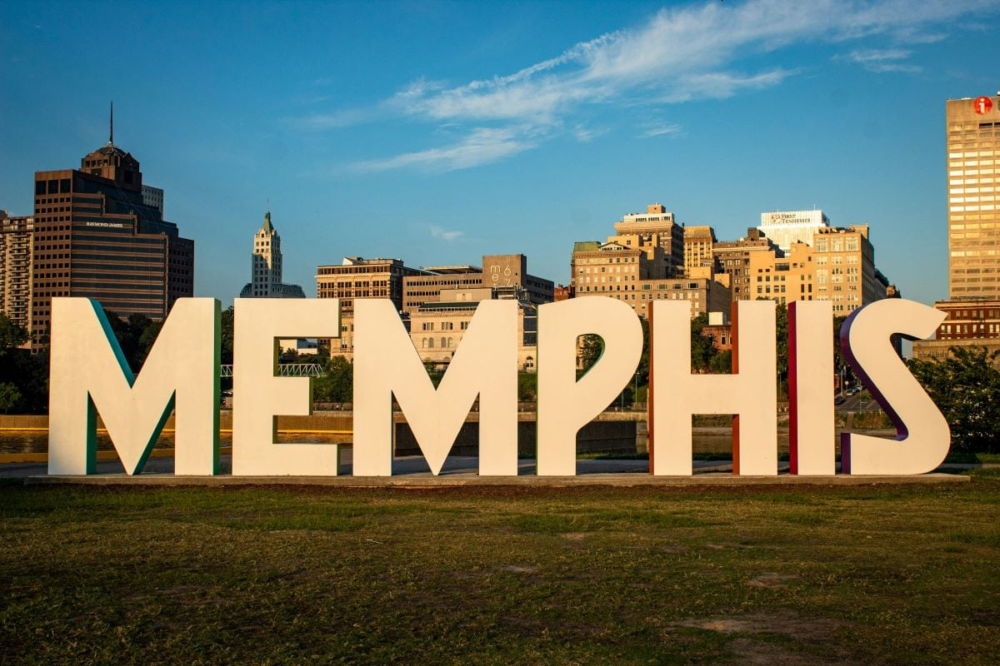
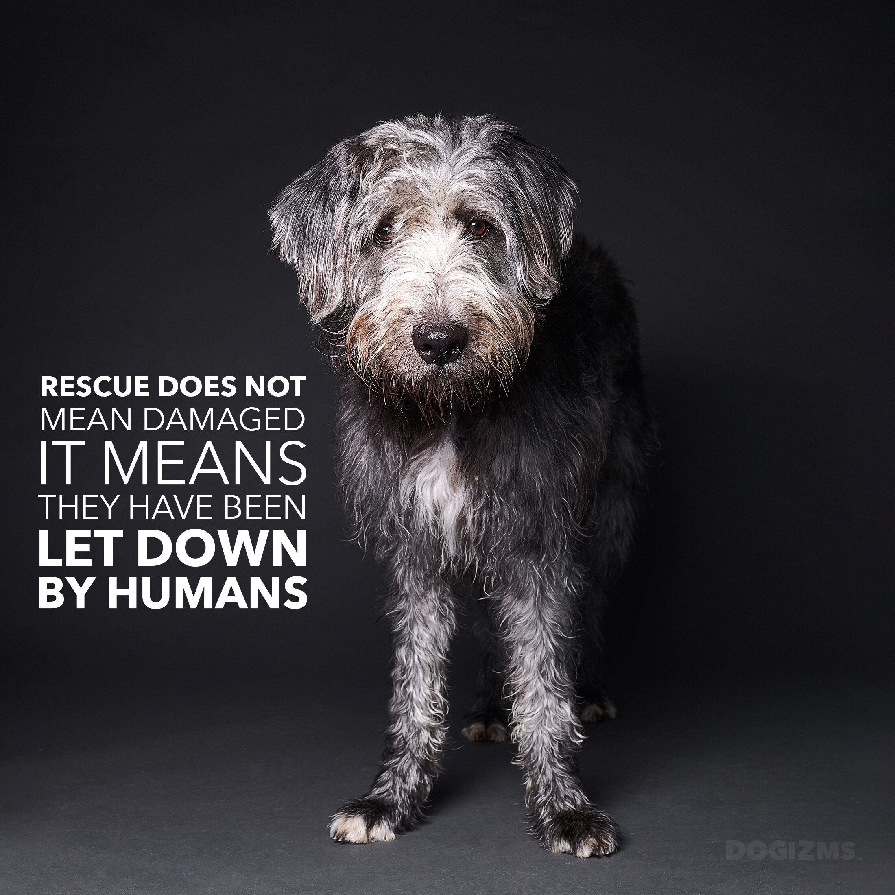
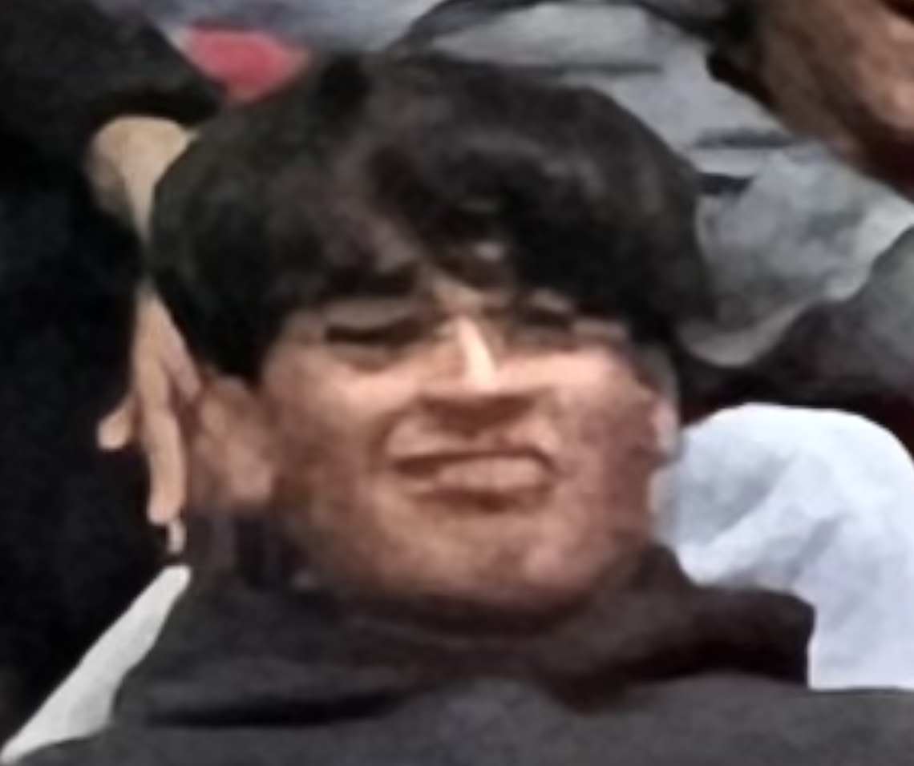

Hi! My name is Bhuvan Krishnamohan. I am a sophmore at Emerald High Schoo. I am a passionate dog owner and one of the founders of the DHAR Organization. I love working with dogs as I have a black labrador named Pluto. We created the DHAR Organization to support puppies struggling in puppy mills. Our mission is to contribute to the wellbeing of these puppies and provide them the care that they deserve.
My name is Zachary Nelson. I am a student-athlete at Emerald High School. I have a dog named Luna. I love dogs, and have a passion for their equality for canines everywhere. I love adventure, and learning more about everything! I am a founding member of D.H.A.R! I am one of the most important members of the foundation of this organization. With my team, we plan to make critical changes to the future of dog breeding and dog health.
My name is Pranil Gundugola and I am a founding member of D.H.A.R. I am a student at Emerald High School. I don’t own dogs, but I still love being around them and I want to help dogs around the world. I love exploring new things, and my role model is Arnav Dhar, one of our biggest sponsors and what our organization is named after.
My name is Rithvik Jangam and I am a keystone founder in D.H.A.R. I am a sophomore at Emerald High School. Although I do not own a dog, I really want to help them find a forever home. Some of my hobbies are hanging outside with my friends and travelling. We named our organization to recognize our BIGGEST sponsor yet, Arnav Dhar. We hope you can donate and provide to this great cause!
Our journey began in Memphis, Tennessee, when we visited a local Petco. As we walked through the aisles filled with puppies, we couldn't help but think: "Where are these puppies coming from?"
We began researching the origins of these puppies, and what we uncovered broke our hearts. We discovered the dark and cruel reality of puppy mills—large, profit-driven breeding operations that prioritize money over the health and well-being of innocent dogs. These poor animals are often kept in cramped, unsanitary conditions, deprived of basic care, affection, and the freedom to run and play.
It was devastating to learn about the inhumane practices these puppies were subjected to simply to satisfy the demand for "cute" pets. Many of them came from places where they were treated as commodities, not living beings with emotions and needs. The realization hit us hard—this wasn't just a business; it was a cycle of cruelty that needed to be stopped.
That sparked the creation of DHAR Dogs Help and Rescue. We wanted to raise awareness about the horrors of puppy mills and fight for the rights of the dogs suffering in these conditions. Our mission became clear: to give these puppies a voice and provide them with the love, care, and respect they deserve.
We are driven by the belief that every dog, no matter their past, deserves a chance at a happy, healthy life. Through rescue, rehabilitation, and education, we are working to end the cruelty of puppy mills and create a world where dogs are treated as family.
Shoutout to Our Biggest Sponsor: Arnav Dhar! 